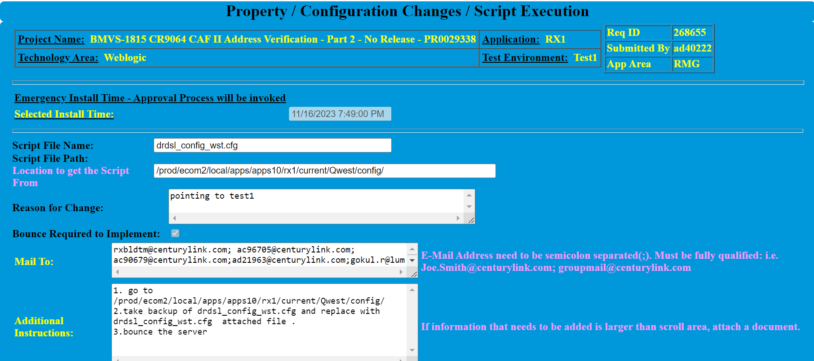
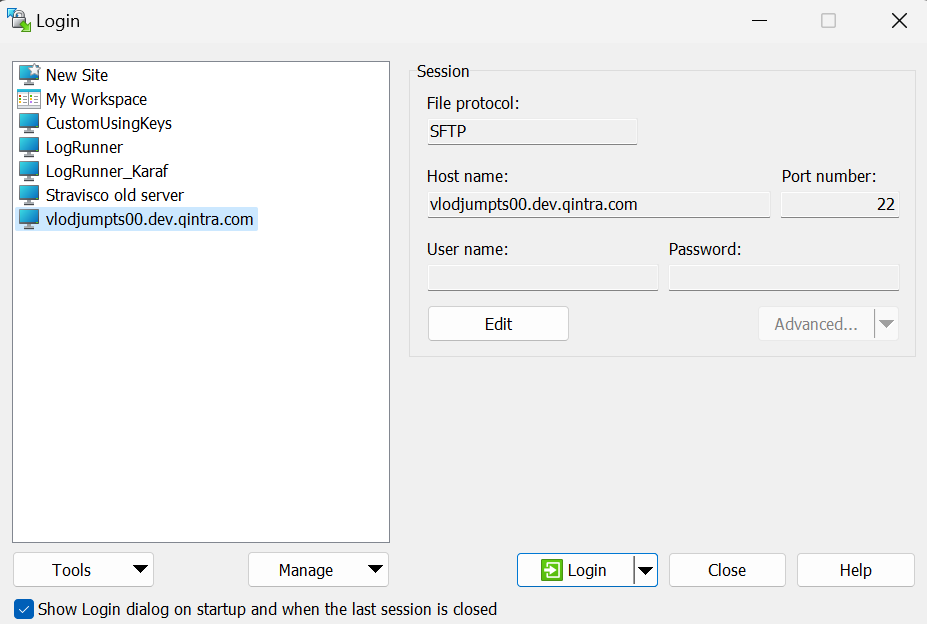
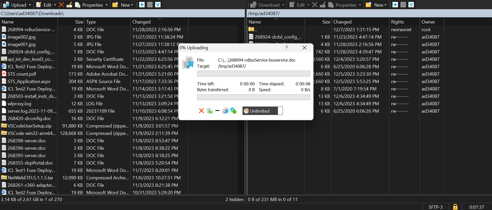
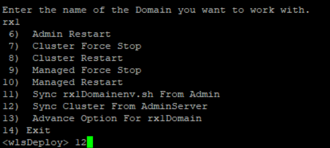
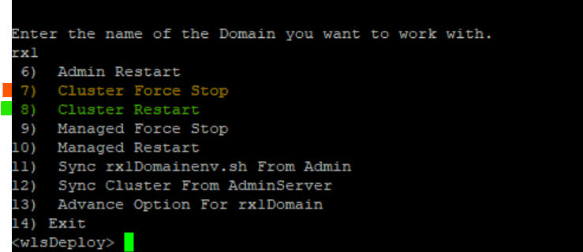

How to Perform a Configuration Update with a New Config File
- Open up the request to see what file is being requested to be updated.
- Download the Config file from attachments or, https://centurylink.sharepoint.com/sites/SPTETS-Team/IETS/ETSLibrary/Forms/AllItems.aspx
- Login to WinScp through JumpServer
- Copy downloaded file from local system to JumpServer using Drag and Drop in WinScp.
- Spawn the servers using Spawn Utility and login.
- In Admin server go to the given path in the instruction and take the backup of existing file.
- Using SCP command get the file from JumpServer to current location
- In stager using WLSDEPLOY script sync all the manageed servers with option 12
- Bounce the server using 7 and 8 Options
- Check the URLs and close the ticket.



Ex: scp -r ad34087@vlodjumpts00.dev.qintra.com:/tmp/ad34087/US_export_policy.jar .

